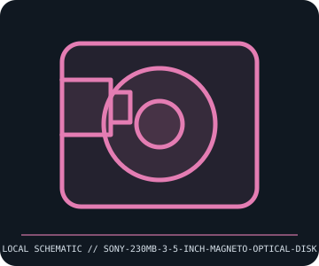

[ REMOVABLE MEDIA // INDIVIDUAL RECORD ]
Sony 3.5-inch 230 MB Magneto-Optical Disk
3.5-inch rewritable magneto-optical (MO) removable disk, 230 MB generation. This entry describes the identified medium or reader, not a bundled drive/media pair; exact capacity and compatibility are model- and host-dependent.

IDENTIFICATION: Record the full label, manufacturer part number, revision/date code, format markings, and packaging. Product-family names alone do not identify capacity generation or supported drive.
Format and compatibility
| Catalog subcategory | Tape and optical cartridges |
|---|---|
| Catalog identity | Sony 3.5-inch 230 MB Magneto-Optical Disk |
| Format / era | 3.5-inch rewritable magneto-optical (MO) removable disk, 230 MB generation |
| Media/device distinction | This record is the removable medium only; the compatible drive is separate and not included. |
| Capacity / interface | Sony 3.5-inch 230 MB rewritable MO cartridge; 230 MB class (typically 512-byte sector formatting, with usable capacity determined by format). Recording combines optical heating with magnetic-field modulation; the cartridge is the medium, not an optical drive. |
| Compatibility | Requires a 230 MB-capable 3.5-inch MO drive and matching interface/driver. 128 MB, 230 MB, 540 MB, 640 MB, and later MO generations are not universally interchangeable; confirm the drive’s listed media capacities and read/write modes. |
| Variant caveat | The 230 MB mark is nominal media class, not a universal formatted filesystem capacity. A similarly sized 3.5-inch optical disc or phase-change disc is a different technology and does not fit every MO drive. |
Media care and preservation
Keep the shutter closed and cartridge in a case; protect it from dust, solvents, bending, direct sun, and extreme heat. Avoid opening the shell. Label with a removable archival label on the case, not the shutter; make verified read-only images for preservation.
- Preserve original packaging, labels, and acquisition/context notes; photograph both sides and record any write-protect state before use.
- Keep valuable contents in at least two independently verified copies on separate storage. Record a checksum and test a restore; removable media alone is not a preservation plan.
Model and version caveats
The 230 MB mark is nominal media class, not a universal formatted filesystem capacity. A similarly sized 3.5-inch optical disc or phase-change disc is a different technology and does not fit every MO drive.
Compatibility statements are limited to the named format/model and published host support. Check manufacturer manual, firmware, regional SKU, and media generation before inserting or writing. A similar connector or cartridge shell is not proof of compatibility.
Sources & further reading
- Sony — Magneto-optical media support archiveManufacturer reference archive for MO media and drive generations; consult the exact drive manual for supported 230 MB cartridges.
- ISO — Optical disk standards catalogueStandards catalogue for optical-storage media, including rewritable optical formats; exact drive/media generation controls compatibility.
Sources identify the relevant standard, manufacturer, or product family. Where an archived SKU-specific datasheet is unavailable, the exact label/manual and supported host list take precedence over family-level marketing claims.